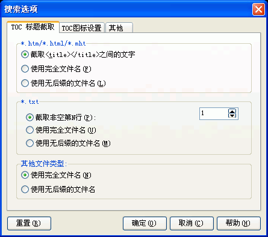

您可以通过选取程序选项菜单下的"搜索选项..."并选取"TOC标题截取"跳格看到这个对话框。关于这个对话框的使用请看下面的具体描述.
注意：TOC是英文TABLE OF CONTENTS的缩写，意思是目录，在EASY CHM里指"CHM目录"。

*.htm/*.html/*.mht / 截取<title></title>之间的文字:
选中则程序自动截取网页的标题作为CHM的目录项的标题。
*.htm/*.html/*.mht / 使用完全文件名:
选中则程序自动截取网页的完全文件名（带扩展名）作为CHM的目录项的标题。
*.htm/*.html/*.mht / 使用无后缀的文件名:
选中则程序自动截取网页的文件名（无扩展名）作为CHM的目录项的标题。
*.txt / 截取非空第N行:
选中则程序自动截取.txt纯文本文件的指定函数的文字内容（自动忽略空行）作为CHM的目录项的标题。
*.txt / 使用完全文件名:
选中则程序自动截取.txt纯文本文件的完全文件名（带扩展名）作为CHM的目录项的标题。
*.txt / 使用无后缀的文件名:
选中则程序自动截取.txt纯文本文件的文件名（无扩展名）作为CHM的目录项的标题。
其他文件类型 / 使用完全文件名:
选中则程序自动截取文件的完全文件名（带扩展名）作为CHM的目录项的标题。
其他文件类型 / 使用无后缀的文件名:
选中则程序自动截取文件的文件名（无扩展名）作为CHM的目录项的标题。
| 版权所有 © 2000-2007 国华软件 保留全部权利. |